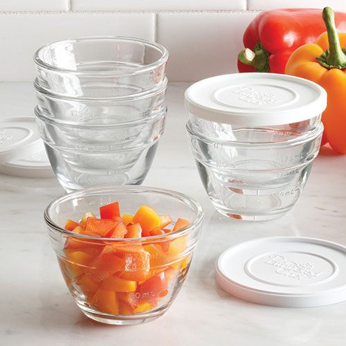
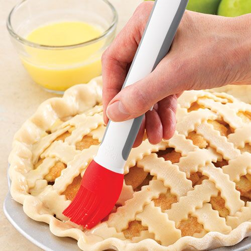

My pan set is all nonstick so I am very picky on the types of cooking utensils I use. I love wooden spoons and spatulas sets while cooking. I use them in curries, sauteing veggies, stirring soup or scooping and fluffing rice. The list could go on. In addition to their multi-use capabilities I love the look and feel of the soft wood against any pot or plate.
It is a mess free kind of can opener. It cuts on the outside of the lid. So metal falling into your fresh canned food. There are also little claws on the side that are used to grab the lid. A very hygienic tool!
What a game changer it has been using these bad boys. They help chop up herbs, meat, eggs and bacon.
You can see through them, bake in them, freeze them, stack them and they are just so pretty.
No need to peel the garlic and or waste time finely chopping. I feel like the halk everytime I use this fun tool.
The clean up with this little hand powered gadget is very minimal. Great for homemade salsas and guacamole.
Perfect for nonstick pans and it helps break up meat and scramble eggs. I also use it to mash up potatoes when I want them slightly lumpy.
Waste not, want not. I would pair this with a zester too. They help add so much more flavor to your recipes.
Just perfect and hygienic for spreading and washing butter, eggs and marinades over anything.